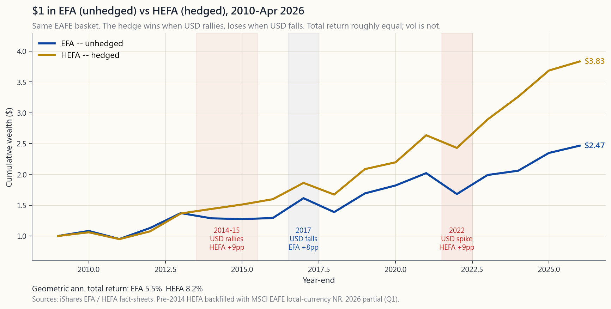
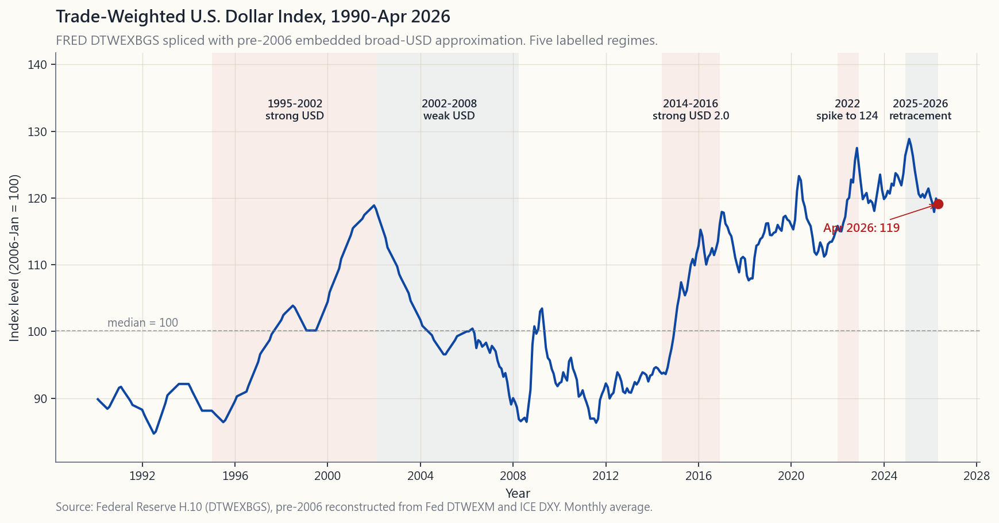

Side Lesson 29: Currency Hedging — When to Hedge, How to Hedge, and the Cost of Insurance
1. Why This Is Important
Side lesson 18 told you the punchline first: this course's recommended portfolio is U.S.-listed equities only. So why is there a whole side lesson on currency hedging? Because **the U.S.-only rule is about equities, not bonds, and it has exceptions.** The moment you reach outside the United States for anything — an EAFE sleeve, an international bond fund, a foreign-currency cash deposit, a Swiss holding company that owns a U.S. ADR — currency arithmetic is back in your portfolio whether you wanted it or not.
There are four reasons this is worth a full side lesson rather than a footnote:
for international bonds.** For stocks the conventional wisdom is roughly defensible (currency vol ~7-9%/yr is small relative to equity vol ~16%/yr, and over 10+ years the FX leg has roughly zero expected return). For investment-grade ex-U.S. bonds the currency vol exceeds the asset vol — a 4% yielding German bund with 8% currency volatility is a worse Sharpe ratio than a U.S. T-note. If you own non-U.S. bonds and you don't hedge, you have accidentally turned a fixed-income sleeve into an FX trade.
Covered-interest-parity makes the cost of a one-year currency hedge approximately equal to the interest rate differential. When U.S. T-bills yield 4.3% and Japanese T-bills yield 0.3%, the one-year USD/JPY hedge earns you about 4 percentage points; when euro rates briefly exceeded U.S. rates in 2008-2009, the hedge cost you ~50bp. Knowing this number turns "should I hedge" into a calculation, not a vibe.
charges 35bp; HEDJ (Europe hedged) and HEWJ (Japan hedged) are in the same range. The hedge mechanic — rolling one-month forwards — is not exotic, it is a baked-in feature you can buy or skip with one ticker change. The retail toolkit is fully built out.
spent 2002-2008 falling, 2008-2014 ranging, 2014-2022 rising sharply, and 2024-2026 retracing. These are six- to ten-year regimes — long enough that being wrong-footed once costs you a chunk of an investing lifetime. You do not have to predict the next regime to size around the last three.
This lesson is not telling you to hedge. It is telling you what the trade-off looks like, where the corner cases are, and which ETFs to use when you decide it is worth doing.
2. What You Need to Know
2.1 The Two-Bet Decomposition
Every dollar you put into a foreign asset is two bets:
priced in its home currency.
that home currency and the U.S. dollar over the holding period.
The exact dollar-denominated return is the product:
$$ 1 + R_{\text{USD}} \;=\; (1 + R_{\text{local}}) \times (1 + R_{\text{FX}}) $$
For small returns the cross-product is negligible and the decomposition is approximately additive: $R_{\text{USD}} \approx R_{\text{local}} + R_{\text{FX}}$. A worked example: in 2024 the Nikkei 225 returned about +19.2% in yen terms; the yen depreciated about 11% against the dollar; the unhedged USD return was therefore $(1.192)(0.89) - 1 \approx +6.1\%$. A Japanese investor saw +19%, an American who held the same stock unhedged saw +6%, and an American who held it hedged saw approximately +19% minus the hedge cost.
The volatility decomposition under the assumption of independent FX and local returns is:
$$ \sigma^2_{\text{USD}} \;=\; \sigma^2_{\text{local}} + \sigma^2_{\text{FX}} $$
For an unhedged developed-market equity, this is roughly $16^2 + 8^2 = 17.9\%$ — about 12% higher portfolio vol than the local. For an unhedged developed-market 7-year bond it is $5^2 + 8^2 = 9.4\%$ — vol is double the underlying. The FX leg matters categorically more for bonds than for stocks.
2.2 What a Hedged ETF Actually Does
A "currency-hedged" ETF holds the foreign basket and sells a series of one-month foreign-currency forwards equal in notional to the basket. At each month-end the forward expires, the realised FX P&L is settled in dollars, and a new forward is opened. The mechanical effect: for the one month between rolls, the dollar return tracks the local-currency return almost exactly, less a small drag from forward pricing.
The drag is the interest-rate differential, which by covered-interest-parity equals the percentage difference between the spot rate and the forward rate:
$$ \text{Forward}/\text{Spot} \;\approx\; \frac{1 + r_{\text{foreign}}} {1 + r_{\text{US}}} $$
Re-arranged for an annualised hedge cost:
$$ \text{Hedge cost (per year)} \;\approx\; r_{\text{US}} - r_{\text{foreign}} $$
This is a sign-honest number. If U.S. short-term rates exceed foreign rates (the situation in April 2026: U.S. 4.3%, EUR 2.0%, JPY 0.5%, GBP 4.0%), the hedge earns positive carry of ~2.3% against the euro and ~3.8% against the yen before the ETF's expense ratio. If the spread inverts (the U.S. ZIRP era 2009-2015 against most of the world), the hedge bleeds carry — but this is rare and shallow, typically 0-50bp against major currencies.
Three vehicles to know:
- HEFA — iShares Currency Hedged MSCI EAFE. 35bp ER. AUM ~$8B.
- HEDJ — WisdomTree Europe Hedged Equity. 58bp ER. AUM ~$2B.
- HEWJ — iShares Currency Hedged MSCI Japan. 35bp ER. AUM ~$0.4B.
The 35bp ER is on top of the underlying basket's natural cost. The hedge mechanic itself adds approximately 5-10bp of frictional cost (monthly roll, bid-ask on forwards) on top of any carry signal.

2.3 The Long-Run Equivalence Theorem
A robust empirical regularity: over rolling 10- to 20-year windows, **hedged and unhedged international equity returns are within roughly 10-30bp/yr of each other.** The mechanism is straightforward — over long enough horizons real exchange rates revert to purchasing power parity, so the cumulative FX contribution to the unhedged return averages roughly zero, leaving you with just the asset return either way.
What does not equalise: volatility and drawdowns. The hedged sleeve has consistently lower realised vol (about 16% vs 18% on EAFE since 2002) and shallower max drawdowns. So the long-run trade-off collapses to: same expected return, lower vol — i.e., a higher Sharpe ratio for the hedged sleeve. This is the rare case where there is a free lunch in the data, and the cost of getting it is just the 35bp ER.
The reason most retail advisors still recommend "leave international unhedged" is behavioural rather than mathematical. Holding HEFA against a falling dollar means underperforming the headline EFA in a dollar-bear regime, and clients fire advisors who underperform the benchmark even when total-return Sharpe is better. Institutional money that does not have that constraint hedges roughly 50-75% of its ex-U.S. equity exposure.
2.4 Short-Run: Five Regimes That Mattered
Sub-decade windows are where the hedge/unhedge decision actually shows up in your statement. The post-1990 record:
- 1995-2002 — strong dollar. DXY ran from 80 to 120. Unhedged
- 2002-2008 — weak dollar. DXY dropped from 120 to 71. Unhedged
- 2014-2016 — strong dollar 2.0. DXY surged from 80 to 100 over
- 2017 — weak dollar. DXY fell 10% as Trump-tax-cut optimism
- 2022 — strong dollar 3.0. DXY hit 114, the highest since 2002,
- 2024-2026 — dollar retracement. DXY drifted from 107 to 99.
The pattern: regimes are long (5-10 years), the magnitudes within them are large (3-4%/yr cumulative), and they do not telegraph in advance. That is what makes hedging a real allocation question rather than a pure "always" or "never."

2.5 The U.S.-Only Carve-Out: International Bonds
The U.S.-only equity rule from side lesson 18 has one quietly important exception: **if you hold non-U.S. fixed income at all, you should hedge it.**
The math from §2.1: a 4-5% yielding ex-U.S. investment-grade bond sleeve has roughly 5% local-price volatility and 8% currency volatility. Combined, the unhedged sleeve has more volatility than the bond's running yield — meaning the FX leg dominates. You are holding a vehicle that the marketing material calls "fixed income" but that behaves like an FX trade with a coupon strapped to it.
Hedged international bond ETFs:
- BNDX — Vanguard Total International Bond. 7bp ER. ~$50B AUM.
- IAGG — iShares Core International Aggregate Bond. 7bp ER.
Note both are hedged by default at the product level — there are no significant unhedged international IG bond ETFs trading at meaningful AUM, because the buyers of these products are the institutions that already did the math in this section.
The course's actual position: own VGIT / IEF / TLT for duration, and own BNDX only if you want explicit non-U.S. credit/duration diversification. For most retail portfolios, the answer is "skip BNDX entirely; the diversification benefit is small once both vehicles are USD-hedged duration." But if you do reach for it, do not hold the unhedged version. There is no scenario in which an unhedged ex-U.S. IG bond sleeve is the optimal choice for a USD-spending investor.
2.6 Optimal Hedge Ratio: The Decision Tree
You do not have to choose 0% hedged or 100% hedged. The hedge ratio $h$ that minimises portfolio volatility is given by the regression coefficient of unhedged return on FX return — which has a closed form:
$$ h^* \;=\; 1 + \rho \cdot \frac{\sigma_{\text{local}}}{\sigma_{\text{FX}}} $$
where $\rho$ is the correlation between the local-currency asset return and the FX return. For developed-market equities $\rho$ is typically slightly positive (about +0.1 to +0.2), so $h^*$ comes out a little above 1.0 — fully hedge. For commodities and EM equities $\rho$ is typically negative (the local market sells off when its currency weakens), so $h^*$ is well below 1.0 — partial hedge or skip.
The pragmatic decision rule the course uses:
| Sleeve | Recommended hedge ratio | Vehicle |
|---|---|---|
| U.S.-listed equity | n/a | VTI/SPY |
| U.S.-listed ADRs | 0% | TSM, ASML, etc. |
| Ex-U.S. IG bonds | 100% | BNDX, IAGG |
| Ex-U.S. developed-market equity | 50-100% | HEFA + EFA mix |
| Emerging-market equity | 0-50% | EEM unhedged or HDEM partial |
| Commodities (priced in USD) | 0% | DBC, PDBC |
| Gold (USD price) | 0% | GLD, IAU |
The 50-100% ex-U.S. equity range is wide on purpose. It reflects that inside this course's framework you should not have a large ex-U.S. sleeve at all — and if you do, the choice between 50/50 and 100/0 is mostly about behavioural tracking-error tolerance, not about expected returns.
3. Common Misconceptions
(the modal regime since 2008), hedging earns positive carry. The "expense" is just the ETF's own ~35bp expense ratio.
Not hedging is taking a position on the dollar. Hedging removes the FX bet so you only own the underlying asset.
forward rate equals the interest-rate differential by covered-interest-parity. Empirically, the spot rate at expiration has zero correlation to the forward — the "forward premium puzzle."
cumulative return contribution averages to roughly zero over 10+ years. The volatility contribution does not — it adds to your monthly drawdowns the entire time.
give you currency risk. If you wanted currency diversification you would buy an FX product directly, not bond-FX combo.
fully collateralised by the underlying basket. Counterparty risk exists but is a fraction of a percent of NAV.
trade-weighted index of six currencies (EUR 57.6%, JPY 13.6%, GBP 11.9%, CAD 9.1%, SEK 4.2%, CHF 3.6%). The Fed's broader DTWEXBGS includes 26 trading partners and is what hedging cost actually tracks.
for ex-U.S. equities, and only because the asset vol dominates the FX vol on long horizons. False for ex-U.S. bonds, where FX vol is the larger component at every horizon.
does the opposite. The differential becomes the hedge carry. You cannot collect a higher foreign yield without taking the FX exposure that on average kills it.
You will under-diversify, pay foreign withholding tax, and have no easy way to layer a hedge. Use a U.S.-listed ETF (hedged or unhedged) for any non-U.S. exposure.
4. Q&A Section
**Q1: I own VXUS in my 401(k). Should I switch to a hedged alternative?** For an equity sleeve held 10+ years the long-run expected returns of hedged vs unhedged are nearly identical. If your 401(k) offers a hedged developed-market option at <50bp ER, the Sharpe ratio is modestly better hedged. If it does not, leaving VXUS alone is fine — the inferior option is "sell to chase the recent winner." The course position remains: minimise the ex-U.S. equity sleeve in the first place.
**Q2: U.S. rates are 4.3% and Japanese rates are 0.5%. Is now a great time to hedge yen exposure?** Yes, in a narrow sense — the carry is roughly +3.8%/yr in your favour. But the carry is already priced into the forward rate, which is what the hedged ETF buys. The carry shows up as the hedge ratio mechanically working in your favour each month, and is the reason HEWJ has tracked EWJ-in-yen so closely since the BOJ kept rates near zero.
Q3: What is the difference between DTWEXBGS and DXY? DXY is the ICE Dollar Index, six currencies, ~58% euro by weight, launched 1973. DTWEXBGS is the Fed's Trade-Weighted Broad Goods + Services index, 26 currencies including CNY and MXN, recalibrated annually. DTWEXBGS is the better measure of the dollar's economic strength; DXY is the better measure of what financial markets watch (and what hedged-EAFE ETF managers actually trade).
Q4: Can I hedge currency exposure myself with futures? You can, but it is not worth it. /6E (euro futures) is $125k notional per contract; rolling quarterly produces tracking error and has tax treatment under §1256 (60/40 LTCG/STCG, see week 39). For sleeves under $5-10M, the 35bp HEFA expense ratio is cheaper than the operational drag of doing it yourself.
**Q5: Why do hedged ETFs sometimes underperform their unhedged twin even when the dollar is rising?** Three reasons: (1) the hedge resets monthly, so intra-month FX moves inside the dollar's overall trend can show up wrong-footed; (2) the ETF's expense ratio is 30-40bp higher than the unhedged version; (3) the forward roll incurs small bid-ask costs.
Q6: The course says U.S.-only. Why are you teaching me how to hedge? The U.S.-only rule is about equity recommendations. The carve-outs are (a) U.S.-listed ADRs (already in U.S. dollars, no FX exposure to hedge); (b) international IG bonds if you choose to own them, where you should always hedge; (c) the rare investor who insists on a 10-20% ex-U.S. equity sleeve, where the hedge decision matters. The lesson exists for completeness, not as a recommendation to add ex-U.S. exposure.
Q7: What about emerging-market currencies — INR, BRL, ZAR? Most major EM currencies do not have liquid forward markets at retail sizes. EM-equity ETFs like EEM are unhedged by structural necessity. The few hedged EM products (HEEM was de-listed in 2018) failed because EM currency carry against USD is positive — i.e., hedging costs you 3-5%/yr of yield, and the EM equity correlation with EM FX is strongly negative, meaning the unhedged position partly diversifies itself.
Q8: Does Berkshire Hathaway hedge its foreign-currency exposure? Famously almost never. Buffett's view is that PPP (purchasing power parity) reverts on long horizons and the hedge cost over BRK's multi-decade holding period is therefore a deadweight loss. This is defensible at BRK's scale and time horizon. It is not defensible for a retail investor with a 10-year horizon and a finite tolerance for intra-decade drawdowns.
Q9: What happens to my hedge when there is a currency crisis? The forward leg pays out in dollars at maturity even if the foreign currency has depreciated 50%. Counterparty risk is small (forwards are collateralised at major dealers). The bigger risk is that during the crisis the underlying foreign asset also crashes — the 1998 Asia crisis hit EM bonds (-30%) regardless of hedge status, because the local-currency leg was the disaster.
Q10: Why doesn't covered-interest-parity break in extreme stress? It does. In late 2008 USD funding stress widened the deviation from CIP to several hundred basis points (the "USD basis"). It does not matter for retail because the hedged ETF's market price reflects the strain in real-time and you can sell out at NAV without rolling forwards yourself. It matters for prime brokers running cross-currency repo books, which is not your problem.
Q11: How does §1256 tax treatment apply to currency hedges? For the futures used by some hedged ETFs internally, yes — but the ETF wrapper handles all of it. Your 1099 from a hedged ETF reports ordinary distributions and capital gains the same as any other ETF. You do not see the §1256 mechanics directly. (See week 39 for the direct-futures version of the same trade.)
**Q12: Is there a "hedged S&P 500" for non-USD investors that I should know about?** Yes — IWDA-hedged variants exist on European exchanges, and similar USD-hedged S&P products exist for Asian investors who want U.S. equities translated back to home currency. Mirror image of HEFA. Not relevant if you are a U.S.-domiciled investor (your spending is in USD), but useful to know if you are advising a non-U.S. friend who holds U.S. stocks.
附加課程29：貨幣對沖——何時對沖、如何對沖，以及保險的成本
1. 為何此課題至關重要
附加課程18已先給出結論：本課程推薦的投資組合僅限美國上市股票。那麼為何還要專門用一整節附加課程講解貨幣對沖？因為美國專一原則針對的是股票，而非債券，且存在例外情況。一旦你將資金投向美國以外的任何資產——EAFE板塊、國際債券基金、外幣存款、持有美國存託憑證的瑞士控股公司——無論你是否願意，貨幣計算就已重新進入你的投資組合。
以下四個原因說明此課題值得單獨一節課深入講解，而非一筆帶過：
本課程並非要你一定對沖，而是讓你清楚看到取捨在哪裡、邊緣情況在哪裡，以及在你決定值得對沖時應選用哪些交易所買賣基金。
2. 你需要掌握的知識
2.1 雙重投注的分解
你每投入外國資產的一美元，實際上是在下兩個注：
以美元計算的實際回報為兩者的乘積：
$$ 1 + R_{\text{USD}} \;=\; (1 + R_{\text{本幣}}) \times (1 + R_{\text{外匯}}) $$
當回報較小時，交叉項可忽略不計，分解近似為加法：$R_{\text{USD}} \approx R_{\text{本幣}} + R_{\text{外匯}}$。舉個實例：2024年日經225指數以日圓計算回報約為+19.2%；日圓對美元貶值約11%；因此未對沖的美元回報約為$(1.192)(0.89) - 1 \approx +6.1\%$。日本投資者看到的是+19%，持有同一股票而未作對沖的美國人看到的是+6%，而持有對沖版本的美國人看到的則大約是+19%減去對沖成本。
在外匯與本幣回報相互獨立的假設下，波動性的分解公式為：
$$ \sigma^2_{\text{USD}} \;=\; \sigma^2_{\text{本幣}} + \sigma^2_{\text{外匯}} $$
對於未對沖的已發展市場股票，大約是$16^2 + 8^2 = 17.9\%$——比本幣波動性高出約12%。對於未對沖的已發展市場七年期債券，則是$5^2 + 8^2 = 9.4\%$——波動性是基礎資產的兩倍。外匯因素對債券的影響在性質上遠比對股票重大。
2.2 對沖交易所買賣基金的實際運作
「貨幣對沖」交易所買賣基金持有境外一籃子資產，同時賣出等值名義本金的一個月期境外貨幣遠期合約。每逢月底，遠期合約到期，已實現的外匯盈虧以美元結算，並開立新的遠期合約。機械效果如下：在每次滾動之間的一個月內，美元回報幾乎與本幣回報一致，僅略有因遠期定價而產生的小幅拖累。
這一拖累即利率差，由拋補利率平價決定，等於即期匯率與遠期匯率之間的百分比差距：
$$ \text{遠期}/\text{即期} \;\approx\; \frac{1 + r_{\text{境外}}} {1 + r_{\text{美國}}} $$
換算為年化對沖成本：
$$ \text{對沖成本（每年）} \;\approx\; r_{\text{美國}} - r_{\text{境外}} $$
這是一個有符號的數字。若美國短期利率超過境外利率（2026年4月的現況：美國4.3%、歐元區2.0%、日本0.5%、英國4.0%），對沖將賺取正向利差——對歐元約2.3%，對日圓約3.8%——費用扣除交易所買賣基金自身開支比率之前皆如此。若利差倒掛（美國零利率時代2009-2015年對比全球大部分地區），對沖會消耗利差——但此情況罕見且幅度較淺，對主要貨幣通常在0至50個基點之間。
三個必須了解的工具：
- HEFA — iShares貨幣對沖MSCI EAFE。開支比率35個基點。資產管理規模約80億美元。EFA的對沖版本，可與未對沖版本並列作比較。
- HEDJ — WisdomTree歐洲對沖股票。開支比率58個基點。資產管理規模約20億美元。傾向歐洲出口導向型企業（西門子、阿斯麥、路易威登、賽諾菲）。
- HEWJ — iShares貨幣對沖MSCI日本。開支比率35個基點。資產管理規模約4億美元。EWJ的對沖版本。
2.3 長期等效定理
一項穩健的實證規律：在滾動的10至20年窗口內，對沖與未對沖國際股票回報每年相差大約僅10至30個基點。機制顯而易見——在足夠長的時間跨度上，實際匯率向購買力平價回歸，因此未對沖回報中外匯部分的累積貢獻平均大約為零，兩種方式最終都只剩資產回報本身。
不會趨同的是：波動性與回撤。對沖板塊自2002年以來一直保持較低的實際波動性（EAFE約16%對18%）和較淺的最大回撤。因此，長期取捨歸結為：預期回報相同，波動性更低——即對沖板塊的夏普比率更高。這是數據中罕見的「免費午餐」，而獲取它的成本僅為35個基點的開支比率。
大多數零售顧問仍建議「國際投資不作對沖」，原因在於行為因素而非數學邏輯。在美元貶值週期中持有HEFA意味著跑輸EFA的表現，而客戶即使在總回報夏普比率更高的情況下，也會因跑輸基準而解僱顧問。不受此制約的機構資金，會對大約50%至75%的非美國股票敞口進行對沖。
2.4 短期視角：五個影響重大的週期
以十年為單位的窗口，才是對沖與否的決策真正體現於投資賬單的地方。1990年後的紀錄：
- 1995-2002年——美元強勢。DXY從80升至120。未對沖的非美國投資相對對沖版本承受損失。未對沖的淨代價：每年約3至4%，持續七年。
- 2002-2008年——美元弱勢。DXY從120跌至71。未對沖版本每年勝出約3至4%。正是這個週期鎖定了教科書上「國際投資不作對沖」的建議。
- 2014-2016年——美元強勢2.0。聯儲局縮減購債與歐洲央行量化寬鬆政策分化，DXY在18個月內從80升至100。HEFA累積跑贏EFA約9個百分點。
- 2017年——美元弱勢。特朗普稅改樂觀情緒消退，DXY下跌10%。未對沖EFA回報25%；HEFA回報17%。未對沖版本在單一年度勝出8個百分點。
- 2022年——美元強勢3.0。聯儲局在全球衰退背景下累計加息525個基點，DXY創2002年以來高位114。HEFA錄得-7.8%；EFA錄得-16.8%。對沖減少了9個百分點的回撤。
- 2024-2026年——美元回調。DXY從107逐步回落至99。未對沖EFA表現略勝。目前2026年4月的格局，是兩者均無明顯優勢的典型週期。
2.5 美國專一原則的豁免情況：國際債券
附加課程18的美國專一股票原則有一個重要的例外：若你持有任何非美國固定收益資產，你應該對其進行對沖。
根據第2.1節的數學推導：一個收益率4至5%的非美國投資級別債券板塊，本幣價格波動性約為5%，貨幣波動性約為8%。合計後，未對沖板塊的波動性超過債券的當期收益率——意味著外匯因素佔主導地位。你持有的工具，宣傳材料稱之為「固定收益」，但其表現卻如同一個附帶票息的外匯交易工具。
對沖國際債券交易所買賣基金：
- BNDX — 先鋒全球國際債券基金。開支比率7個基點。資產管理規模約500億美元。美元對沖。若有意持有任何非美國固定收益，這是首選。
- IAGG — iShares核心國際綜合債券。開支比率7個基點。美元對沖。BNDX的主要競爭對手。
本課程的實際立場：持有VGIT / IEF / TLT作為存續期管理，只有在需要非美國信用/存續期分散投資時才考慮BNDX。對大多數零售投資組合而言，答案是「完全略過BNDX；一旦兩種工具均以美元對沖後，分散投資效益其實很小。」但若你決定持有，切勿選擇未對沖版本。對於以美元消費的投資者而言，未對沖的非美國投資級別債券板塊在任何情況下都不是最優選擇。
2.6 最優對沖比率：決策樹
你不必在0%對沖或100%對沖之間二選一。令投資組合波動性最小化的對沖比率$h$，由未對沖回報對外匯回報的回歸係數給出——有其封閉形式解：
$$ h^* \;=\; 1 + \rho \cdot \frac{\sigma_{\text{本幣}}}{\sigma_{\text{外匯}}} $$
其中$\rho$為本幣資產回報與外匯回報之間的相關性。對已發展市場股票而言，$\rho$通常略為正值（約+0.1至+0.2），因此$h^$略高於1.0——即完全對沖。對商品及新興市場股票而言，$\rho$通常為負值（本地市場在本幣貶值時也會下跌），因此$h^$遠低於1.0——即部分對沖或不對沖。
本課程採用的實用決策準則：
| 板塊 | 建議對沖比率 | 工具 |
|---|---|---|
| 美國上市股票 | 不適用 | VTI/SPY |
| 美國上市存託憑證 | 0% | TSM、ASML等 |
| 非美國投資級別債券 | 100% | BNDX、IAGG |
| 非美國已發展市場股票 | 50-100% | HEFA + EFA組合 |
| 新興市場股票 | 0-50% | EEM未對沖或HDEM部分對沖 |
| 以美元計價的商品 | 0% | DBC、PDBC |
| 以美元計價的黃金 | 0% | GLD、IAU |
非美國股票50-100%的範圍故意設得較寬。這反映了在本課程框架內，你本就不應持有大規模非美國板塊——若你確實持有，在50/50與100/0之間如何選擇，主要取決於你對行為層面追蹤誤差的容忍度，而非預期回報的差異。
3. 常見誤解
4. 問答環節
問題1：我的強積金帳戶持有VXUS，是否應轉換為對沖版本？ 對於持有10年以上的股票板塊，對沖與未對沖的長期預期回報幾乎相同。若你的強積金提供開支比率低於50個基點的對沖已發展市場選項，夏普比率會稍好。若沒有，繼續持有VXUS即可——最差的做法是「賣出以追逐近期贏家」。本課程的立場不變：首先應盡量減少非美國股票板塊的比重。
問題2：美國利率4.3%，日本利率0.5%，現在是對沖日圓敞口的好時機嗎？ 就狹義而言，是的——利差約為每年+3.8%，對你有利。但這一利差已計入遠期匯率，而對沖交易所買賣基金正是按此遠期匯率買入。利差體現為對沖比率每個月機械性地對你有利，這也是為何HEWJ在日本央行維持近零利率以來，能夠與以日圓計算的EWJ走勢高度吻合。
問題3：DTWEXBGS與DXY有何分別？ DXY是ICE美元指數，涵蓋六種貨幣，歐元權重約58%，1973年推出。DTWEXBGS是美聯儲的貿易加權廣義商品+服務指數，涵蓋26種貨幣（包括人民幣和墨西哥比索），每年重新校準。DTWEXBGS是衡量美元經濟強度的更佳指標；DXY則是金融市場密切關注的指標（也是對沖EAFE交易所買賣基金管理人實際交易的參考）。
問題4：我可以自行用期貨對沖貨幣敞口嗎？ 可以，但並不值得。/6E（歐元期貨）每份合約名義價值12.5萬美元；按季滾動會產生追蹤誤差，且按照第1256條款享有稅務處理（60/40長期/短期資本增值，詳見第39週）。對於規模低於500至1,000萬美元的板塊，35個基點的HEFA開支比率比自行操作的運作成本更划算。
問題5：為何對沖交易所買賣基金有時在美元上升期間仍跑輸未對沖版本？ 原因有三：（1）對沖每月重置，因此在美元整體趨勢內，月內的外匯波動可能出現與預期相反的情況；（2）交易所買賣基金的開支比率比未對沖版本高出30至40個基點；（3）遠期滾動產生小幅買賣差價成本。
問題6：課程說美國專一，為何還要教我如何對沖？ 美國專一原則針對的是股票建議。豁免情況包括：（甲）美國上市存託憑證（已以美元計價，無需對沖）；（乙）若你選擇持有的國際投資級別債券（此時應永遠對沖）；（丙）堅持配置10至20%非美國股票板塊的少數投資者（此時對沖決策至關重要）。本課程的設立是為了完整性，而非建議增加非美國敞口。
問題7：新興市場貨幣（印度盧比、巴西雷亞爾、南非蘭特）又如何？ 大多數主要新興市場貨幣在零售規模下沒有流動性充裕的遠期市場。EEM等新興市場股票交易所買賣基金因結構原因是未對沖的。少數對沖新興市場產品（HEEM已於2018年退市）最終失敗，原因是新興市場貨幣對美元的利差為正——即對沖每年令你損失3至5%的收益率，而新興市場股票與新興市場外匯的相關性極為負向，意味著未對沖的部位本身已有一定的自我分散效果。
問題8：巴郡哈撒韋會對沖其外匯敞口嗎？ 出了名地幾乎從不對沖。巴菲特的觀點是，購買力平價在長期內會回歸，因此在巴郡數十年的持倉期內，對沖成本最終是一種無謂損失。以巴郡的規模和時間跨度而言，此論點尚屬合理。對於持倉期10年、且對十年內最大回撤有一定容忍上限的零售投資者，則不然。
問題9：在貨幣危機中，我的對沖會發生什麼？ 遠期合約部分在到期時以美元結算，即使境外貨幣貶值50%亦然。交易對手風險極小（遠期合約由主要交易商提供充足抵押）。更大的風險在於，危機期間境外基礎資產也同樣崩潰——1998年亞洲金融危機令新興市場債券下跌約30%，無論是否對沖皆然，因為本幣板塊本身才是災難所在。
問題10：為何拋補利率平價在極端壓力下不會崩潰？ 確實會。2008年底美元融資壓力令拋補利率平價偏差擴大至數百個基點（即所謂「美元基差」）。這對零售投資者影響不大，因為對沖交易所買賣基金的市場價格會實時反映此壓力，你可以按資產淨值賣出而無需自行滾動遠期合約。這一問題影響的是從事跨貨幣附買回交易的優先證券商，與普通投資者無關。
問題11：第1256條款的稅務處理如何適用於貨幣對沖？ 對於部分對沖交易所買賣基金內部使用的期貨，確實適用——但交易所買賣基金的架構已全部處理完畢。你從對沖交易所買賣基金收到的1099表格，與其他任何交易所買賣基金一樣，只顯示普通分配及資本增值。你不會直接看到第1256條款的機制。（自行操作期貨的相關版本詳見第39週。）
問題12：有沒有供非美元投資者使用的「對沖標準普爾500」產品可以了解？ 有——歐洲交易所有IWDA的對沖變體，亞洲投資者也有類似的美元對沖標準普爾500產品，讓他們持有的美國股票可換算回本國貨幣。這是HEFA的鏡像版本。對於居住在美國的投資者而言（消費以美元計算）並不適用，但若你在向非美國朋友提供建議時，了解這一點會有所幫助。
番外課 29：貨幣避險——何時避險、如何避險，以及保險的成本
1. 為什麼這很重要
番外課 18 先給了你結論：本課程推薦的投資組合僅限在美國掛牌的股票。那麼為什麼還要有整整一堂番外課來談貨幣避險？因為美國唯一原則針對的是股票，不包含債券，而且有例外。只要你向美國以外伸手拿任何東西——EAFE 配置、國際債券基金、外幣現金存款、持有美國存託憑證的瑞士控股公司——貨幣運算就會回到你的投資組合裡，不管你想不想要。
以下四個理由說明這值得單獨一堂課，而不是一個注腳：
本課不是要叫你避險。而是告訴你這個取捨長什麼樣子、哪裡有特殊情況，以及當你決定值得這麼做時，該用哪些指數股票型基金。
2. 你需要知道的事
2.1 雙重投注的拆解
你投入外國資產的每一塊錢，都是兩個投注：
以美元計算的精確報酬是兩者的乘積：
$$ 1 + R_{\text{美元}} \;=\; (1 + R_{\text{當地}}) \times (1 + R_{\text{外匯}}) $$
當報酬較小時，交叉項可以忽略，拆解近似可加：$R_{\text{美元}} \approx R_{\text{當地}} + R_{\text{外匯}}$。舉個實例：2024 年日經 225 指數以日圓計算的報酬約為 +19.2%；日圓對美元貶值約 11%；因此未避險的美元報酬為 $(1.192)(0.89) - 1 \approx +6.1\%$。日本投資人看到 +19%，持有相同股票未避險的美國人看到 +6%，而已做避險的美國人看到的是大約 +19% 減去避險成本。
在外匯與當地報酬相互獨立的假設下，波動性拆解如下：
$$ \sigma^2_{\text{美元}} \;=\; \sigma^2_{\text{當地}} + \sigma^2_{\text{外匯}} $$
對於未避險的已開發市場股票，這大約是 $16^2 + 8^2 = 17.9\%$——比當地波動性高出約 12%。對於未避險的已開發市場 7 年期債券，則是 $5^2 + 8^2 = 9.4\%$——波動性是底層資產的兩倍。外匯這一腳對債券的影響，遠比對股票的影響更大。
2.2 避險指數股票型基金實際上在做什麼
「貨幣避險」指數股票型基金持有外國股票籃子，同時賣出以籃子名目金額計算的一個月外幣遠期合約。每月底，遠期合約到期、外匯損益以美元結算，並開立新的遠期合約。機械上的效果是：在兩次滾動之間的一個月裡，美元報酬幾乎完全跟蹤當地貨幣報酬，扣除因遠期定價造成的微小拖累。
這個拖累就是利率差，由拋補利率平價理論決定，等於即期匯率與遠期匯率的百分比差值：
$$ \text{遠期匯率}/\text{即期匯率} \;\approx\; \frac{1 + r_{\text{外國}}} {1 + r_{\text{美國}}} $$
換算成年化避險成本：
$$ \text{避險成本（每年）} \;\approx\; r_{\text{美國}} - r_{\text{外國}} $$
這是一個帶正負號的數字。若美國短期利率高於外國利率（2026 年 4 月的情況：美國 4.3%、歐元區 2.0%、日圓 0.5%、英鎊 4.0%），避險對歐元賺取正的附帶收益約 2.3%，對日圓約 3.8%，這還是在扣除指數股票型基金費用率之前。若利差倒轉（2009-2015 年美國接近零利率，對多數全球市場而言），避險會流失附帶收益——但這種情況罕見且幅度淺，對主要貨幣通常在 0-50 個基點之間。
以下是三個值得了解的工具：
- HEFA — iShares 貨幣避險 MSCI EAFE。費用率 35 個基點。規模約 80 億美元。EFA 的避險版孿生。可乾淨地與未避險版本並排比較。
- HEDJ — WisdomTree 歐洲避險股票。費用率 58 個基點。規模約 20 億美元。偏重出口導向的歐洲企業（西門子、艾司摩爾、酩悅軒尼詩路易威登、賽諾菲）。
- HEWJ — iShares 貨幣避險 MSCI 日本。費用率 35 個基點。規模約 4 億美元。EWJ 的避險版孿生。
2.3 長期等效定理
一個穩健的實證規律：在滾動 10 到 20 年的時間窗口裡，避險與未避險的國際股票報酬，每年相差大約只有 10-30 個基點。機制很直觀——在足夠長的時間裡，實質匯率會回歸購買力平價，因此未避險報酬中的累積外匯貢獻平均大致為零，最終兩者都回歸資產本身的報酬。
不會相等的是：波動性與回撤。避險配置始終有較低的實現波動性（自 2002 年以來 EAFE 約為 16% vs 18%）以及較淺的最大回撤。因此，長期的取捨最終歸結為：預期報酬相同、波動性較低——也就是說，避險配置有更高的夏普比率。這是資料中難得的免費午餐，而取得它的成本只是 35 個基點的費用率。
大多數零售理財顧問仍然推薦「國際部位不避險」，原因是行為面而非數學面。在美元走弱期間持有 HEFA，意味著跑輸 EFA 的主要報酬，而客戶會因為跑輸基準而解約，即便夏普比率的整體表現更好。不受此限制的機構資金，大約避險其 50-75% 的非美國股票曝險。
2.4 短期：五個重要趨勢週期
十年以內的時間窗口，才是避險或不避險的決策真正出現在你對帳單上的地方。1990 年以後的紀錄：
- 1995-2002 年——強勢美元。美元指數從 80 漲到 120。未避險的非美國資產相對避險版落後。不避險的淨成本：七年間每年約 3-4%。
- 2002-2008 年——弱勢美元。美元指數從 120 跌至 71。未避險版每年勝出約 3-4%。這個趨勢週期奠定了「國際部位不避險」這個教科書建議的基礎。
- 2014-2016 年——強勢美元 2.0。聯準會縮減購債與歐洲央行量化寬鬆出現分歧，美元指數在 18 個月內從 80 飆升至 100。HEFA 累計跑贏 EFA 約 9 個百分點。
- 2017 年——弱勢美元。川普減稅樂觀情緒消退，美元指數下跌 10%。未避險 EFA 報酬 25%；HEFA 報酬 17%。未避險版單年勝出 8 個百分點。
- 2022 年——強勢美元 3.0。聯準會在全球衰退中升息 525 個基點，美元指數觸及 114，為 2002 年以來最高。HEFA -7.8%；EFA -16.8%。避險節省了 9 個百分點的回撤。
- 2024-2026 年——美元回落。美元指數從 107 漂移至 99。未避險 EFA 小幅跑贏。目前 2026 年 4 月的局勢，是兩邊都沒有明顯優勢的格局。
2.5 美國唯一的例外：國際債券
番外課 18 的美國唯一股票原則，有一個悄悄重要的例外：只要你持有任何非美國固定收益，就應該避險。
§2.1 的數學：一個殖利率 4-5% 的非美國投資等級債券配置，當地價格波動性約為 5%、匯率波動性約為 8%。合計後，未避險配置的波動性超過債券的滾動殖利率——意思是外匯這一腳主導了一切。你持有的是行銷文件稱之為「固定收益」的工具，但它的行為更像是掛了一個票面利率的外匯交易。
避險國際債券指數股票型基金：
- BNDX — 先鋒全球國際債券（不含美國）。費用率 7 個基點。規模約 500 億美元。美元避險版。只要你想配置任何非美國固定收益，這是預設選擇。
- IAGG — iShares 核心國際綜合債券。費用率 7 個基點。美元避險版。BNDX 的主要競爭對手。
本課程的實際立場：以 VGIT / IEF / TLT 取得存續期間曝險，只有在你確實想要非美國信用或存續期間分散時才考慮 BNDX。對多數零售投資組合而言，答案是「完全跳過 BNDX；一旦兩個工具都是美元避險的存續期間配置，分散效益就很有限。」但如果你確實要配置，千萬不要持有未避險版本。沒有任何情境下，未避險的非美國投資等級債券配置，會是以美元消費的投資人的最優選擇。
2.6 最適避險比例：決策樹
你不必在 0% 避險或 100% 避險之間二選一。使投資組合波動性最小化的避險比例 $h$ 由未避險報酬對外匯報酬的回歸係數給出——有封閉解：
$$ h^* \;=\; 1 + \rho \cdot \frac{\sigma_{\text{當地}}}{\sigma_{\text{外匯}}} $$
其中 $\rho$ 是當地貨幣資產報酬與外匯報酬之間的相關性。對已開發市場股票而言，$\rho$ 通常略為正值（約 +0.1 到 +0.2），因此 $h^$ 會略高於 1.0——完全避險。對大宗原物料和新興市場股票而言，$\rho$ 通常為負值（當地市場在其貨幣貶值時同步下跌），因此 $h^$ 遠低於 1.0——部分避險或略過。
本課程使用的實用決策規則：
| 配置類型 | 建議避險比例 | 工具 |
|---|---|---|
| 美國掛牌股票 | 不適用 | VTI/SPY |
| 美國掛牌存託憑證 | 0% | 台積電、艾司摩爾等 |
| 非美國投資等級債券 | 100% | BNDX、IAGG |
| 非美國已開發市場股票 | 50-100% | HEFA + EFA 混合 |
| 新興市場股票 | 0-50% | EEM 未避險或 HDEM 部分避險 |
| 以美元計價的原物料 | 0% | DBC、PDBC |
| 以美元計價的黃金 | 0% | GLD、IAU |
非美國股票的 50-100% 範圍刻意設得很寬。這反映了在本課程框架內，你根本不應該有大規模的非美國配置——而如果你確實有，50/50 和 100/0 之間的選擇，主要是行為上的追蹤誤差容忍度問題，而非預期報酬問題。
3. 常見迷思
4. 問答章節
Q1：我的 401(k) 裡有 VXUS。我應該換成避險版嗎？ 對於持有 10 年以上的股票配置，避險與未避險的長期預期報酬幾乎相同。如果你的 401(k) 提供費用率低於 50 個基點的避險已開發市場選項，夏普比率在避險版下會略高。如果沒有，讓 VXUS 繼續放著就好——最差的選擇是「賣掉去追近期的贏家」。本課程的立場依然是：一開始就盡量縮小非美國股票配置。
Q2：美國利率是 4.3%，日本是 0.5%。現在是避險日圓曝險的好時機嗎？ 在狹義上是的——附帶收益大約是 +3.8%/年，對你有利。但這個附帶收益已經被遠期匯率反映進去了，而那正是避險指數股票型基金在買的東西。附帶收益以避險比例每月機械性發揮作用的形式呈現，這也是為什麼自日本央行將利率維持在接近零的水準以來，HEWJ 能如此緊密地追蹤以日圓計算的 EWJ。
Q3：DTWEXBGS 和美元指數有什麼不同？ 美元指數是洲際交易所的美元指數，六種貨幣，歐元權重約 58%，1973 年推出。DTWEXBGS 是聯準會的貿易加權廣義商品加服務指數，包含 26 種貨幣（含人民幣和墨西哥披索），每年重新校準。DTWEXBGS 更能衡量美元的經濟強弱；美元指數則更能反映金融市場的關注焦點（也是避險 EAFE 指數股票型基金經理人實際操作的依據）。
Q4：我可以自己用期貨來避險貨幣曝險嗎？ 可以，但不值得。/6E（歐元期貨）每口名目金額為 12.5 萬美元；每季滾動會產生追蹤誤差，且依第 1256 條款享有特殊稅務處理（60% 長期資本利得/40% 短期資本利得，詳見第 39 週）。對於 500 萬至 1,000 萬美元以下的配置，HEFA 35 個基點的費用率比自己操作的運作成本還便宜。
Q5：為什麼避險指數股票型基金有時即便在美元走強時，表現仍不如未避險版本？ 三個原因：（1）避險每月重置，因此美元整體趨勢中月內的外匯波動可能在方向上跟整體相反；（2）指數股票型基金費用率比未避險版高 30-40 個基點；（3）遠期合約滾動產生小額買賣價差成本。
Q6：本課說美國唯一。你為什麼還要教我怎麼避險？ 美國唯一原則是針對股票推薦。例外情況是：（a）美國掛牌存託憑證（已以美元計價，沒有外匯曝險需要避險）；（b）國際投資等級債券（如果你選擇持有），應始終避險；（c）堅持要配置 10-20% 非美國股票的少數投資人，在那種情況下避險決策很重要。本課是為了完整性而存在，並非建議你增加非美國曝險。
Q7：新興市場貨幣（印度盧比、巴西雷亞爾、南非蘭特）怎麼辦？ 大多數主要新興市場貨幣在零售規模下沒有流動性充足的遠期市場。EEM 等新興市場股票指數股票型基金在結構上就是未避險的。少數幾個避險新興市場產品（HEEM 已於 2018 年下市）失敗的原因在於，新興市場貨幣對美元的附帶收益是正值——也就是說，避險每年要花掉你 3-5% 的殖利率，加上新興市場股票與新興市場匯率的相關性呈現強烈負值，意味著未避險部位在一定程度上自我分散。
Q8：波克夏海瑟威會避險其外幣曝險嗎？ 出了名地幾乎從不避險。巴菲特的觀點是：購買力平價在長期會回歸，因此在波克夏海瑟威跨越數十年的持有期間，避險成本是一種無謂的損耗。以波克夏的規模和時間視野來看，這說法站得住腳。但對於擁有 10 年投資期間、且在十年以內對回撤容忍度有限的零售投資人，這並不適用。
Q9：發生匯率危機時，我的避險會怎樣？ 遠期合約到期時，即便外幣已貶值 50%，也會以美元付款結算。交易對手風險很小（遠期合約由主要交易商提供擔保）。更大的風險在於，危機期間底層的外國資產也會同步崩跌——1998 年亞洲金融風暴讓新興市場債券跌掉約 30%，不管有沒有避險都一樣，因為當地貨幣這一腳才是災難所在。
Q10：為什麼拋補利率平價在極度壓力下不會失效？ 它確實會。2008 年底的美元融資壓力，曾讓拋補利率平價的偏離幅度擴大到數百個基點（「美元基差」）。對零售投資人無所謂，因為避險指數股票型基金的市場價格會即時反映這種壓力，你可以用淨值賣出而不必自己滾動遠期合約。這對從事跨幣種附買回操作的主要券商很重要，但那不是你要操心的問題。
Q11：第 1256 條款的稅務處理如何適用於貨幣避險？ 對於部分避險指數股票型基金在內部使用的期貨，確實適用——但指數股票型基金的架構會在內部處理一切。你從避險指數股票型基金收到的 1099 表格，報告的股利和資本利得與其他指數股票型基金相同。你不會直接看到第 1256 條款的運作細節。（自行操作期貨版本的相同交易，詳見第 39 週。）
Q12：非美國投資人是否有「避險版標準普爾 500」可以參考？ 有——歐洲交易所存在 IWDA 的避險版，亞洲市場也有類似的美元避險標準普爾 500 產品，供想要把美國股票換算回本國貨幣的亞洲投資人使用。這是 HEFA 的鏡像。如果你是在美國設籍的投資人（以美元消費），這並不相關，但在為非美國朋友提供建議時，了解這一點很有用。
补充课程29：货币对冲——何时对冲、如何对冲，以及保险的代价
1. 为什么这一课很重要
补充课程18已经告诉过你结论：本课程推荐的投资组合仅限于在美国上市的股票。那么，为什么还要专门用一整节补充课程讲货币对冲？因为美国本土规则针对的是股票，而非债券，且存在例外情形。只要你将资金伸向美国之外的任何资产——EAFE板块配置、国际债券基金、外币现金存款，或持有美国存托凭证的瑞士控股公司——货币算术就会重新进入你的投资组合，无论你愿意与否。
以下四点说明了为什么本主题值得单独开设一节课，而非一个脚注：
本课程无意强制要求你进行对冲，而是告诉你权衡取舍的逻辑所在、边角情形在哪里，以及在决定对冲时应使用哪些交易所交易基金。
2. 核心知识点
2.1 双重押注的分解
你投入外国资产的每一美元，实际上是两笔押注：
以美元计价的实际收益是两者的乘积：
$$ 1 + R_{\text{USD}} \;=\; (1 + R_{\text{本币}}) \times (1 + R_{\text{汇率}}) $$
在收益率较小时，交叉项可忽略不计，拆解近似为加法关系：$R_{\text{USD}} \approx R_{\text{本币}} + R_{\text{汇率}}$。举例说明：2024年日经225指数以日元计价上涨约+19.2%；日元兑美元贬值约11%；未对冲的美元收益因此约为$(1.192)(0.89) - 1 \approx +6.1\%$。日本投资者看到的是+19%，持有同一股票但未对冲的美国投资者看到的是+6%，而进行了对冲的美国投资者看到的则约为+19%减去对冲成本。
在汇率与本币收益相互独立的假设下，波动性分解如下：
$$ \sigma^2_{\text{USD}} \;=\; \sigma^2_{\text{本币}} + \sigma^2_{\text{汇率}} $$
对于未对冲的发达市场股票，这大约是$16^2 + 8^2 = 17.9\%$——比本币波动率高出约12%。对于未对冲的发达市场7年期债券，则为$5^2 + 8^2 = 9.4\%$——波动性是基础资产的两倍。相比股票，汇率分项对债券的影响在数量级上更为显著。
2.2 对冲型交易所交易基金的实际运作机制
"货币对冲"型交易所交易基金持有境外资产篮子，同时卖出与篮子名义价值相等的一个月期外币远期合约。每月末，远期合约到期，已实现的汇率损益以美元结算，并开立新的远期合约。其机制效果在于：在两次展期之间的一个月内，美元收益与本币收益的走势几乎完全一致，仅扣除远期定价产生的微小拖累。
这一拖累即为利率差，由抛补利率平价原理决定，等于即期汇率与远期汇率之间的百分比差异：
$$ \text{远期}/\text{即期} \;\approx\; \frac{1 + r_{\text{外国}}} {1 + r_{\text{美国}}} $$
整理后得到年化对冲成本：
$$ \text{对冲成本（每年）} \;\approx\; r_{\text{美国}} - r_{\text{外国}} $$
这是一个有符号的数值。若美国短期利率高于外国利率（2026年4月的实际情况：美国4.3%、欧元区2.0%、日本0.5%、英国4.0%），对冲将在交易所交易基金费用率之外，为你兑欧元带来约2.3%的正向套息收益，兑日元带来约3.8%的正向套息收益。若利差反转（2009-2015年美国零利率时期，彼时大多数主要货币利率高于美国），对冲会产生套息成本——但此情形较为罕见且幅度有限，通常仅为0-50个基点。
以下三类产品值得了解：
- HEFA — iShares货币对冲MSCI EAFE指数基金。费用率35个基点。规模约80亿美元。EFA的对冲版孪生产品，便于对比。
- HEDJ — WisdomTree欧洲对冲股票基金。费用率58个基点。规模约20亿美元。侧重出口导向型欧洲企业（西门子、阿斯麦、路威酩轩、赛诺菲）。
- HEWJ — iShares货币对冲MSCI日本指数基金。费用率35个基点。规模约4亿美元。EWJ的对冲版孪生产品。
2.3 长期等效定理
一项稳健的实证规律：在10至20年的滚动窗口内，对冲与未对冲的国际股票年化收益之差通常在10-30个基点以内。其背后机制简单明了——在足够长的时间跨度内，实际汇率回归购买力平价，因此未对冲收益中累积汇率贡献的均值约为零，两种方式最终都只剩下资产本身的收益。
不会均等化的是：波动性与回撤。对冲版始终具有更低的已实现波动率（自2002年以来，EAFE约为16% vs 18%）和更浅的最大回撤。因此，长期取舍最终归结为：相同的预期收益，更低的波动性——即对冲版具有更高的夏普比率。这是数据中罕见的免费午餐，获取它的成本仅是35个基点的费用率。
大多数零售顾问仍推荐"放任国际资产不对冲"，原因是行为因素而非数学逻辑。在美元走弱周期中持有HEFA意味着跑输EFA的业绩基准，而客户会在总收益夏普比率更优的情况下，仍因跑输基准而解雇顾问。不受此约束的机构资金，大约对冲其50-75%的境外股票敞口。
2.4 短期视角：五个关键历史周期
在十年以内的时间窗口里，对冲与否的决策才真实体现在你的账户净值上。1990年后的历史记录如下：
- 1995-2002年——强美元周期。 DXY从80上涨至120。未对冲的境外资产相对于对冲版承受亏损。未对冲的净代价：约每年3-4%，持续七年。
- 2002-2008年——弱美元周期。 DXY从120跌至71。未对冲版胜出约每年3-4%。正是这一周期奠定了"放任国际资产不对冲"这一教科书建议的基础。
- 2014-2016年——强美元周期2.0。 随着美联储缩减购债与欧洲央行量化宽松的政策分化，DXY在18个月内从80急升至100。HEFA累计跑赢EFA约9个百分点。
- 2017年——弱美元周期。 随着特朗普减税预期消退，DXY下跌10%。未对冲EFA回报率达25%；HEFA回报率为17%。未对冲版单年领先8个百分点。
- 2022年——强美元周期3.0。 美联储在全球经济衰退背景下连续加息525个基点，DXY升至114，创2002年以来新高。HEFA -7.8%；EFA -16.8%。对冲挽回约9个百分点的回撤。
- 2024-2026年——美元回调。 DXY从107缓降至99。未对冲EFA小幅跑赢。当前2026年4月的格局，属于双方均无明显优势的周期类型。
2.5 美国本土原则的例外：国际债券
补充课程18中的美国本土股票规则有一个不易察觉的重要例外：若你持有任何非美固定收益资产，都应进行对冲。
从第2.1节的数学推导可知：一只收益率4-5%的境外投资级债券配置，本币价格波动率约为5%，货币波动率约为8%。合并后，未对冲配置的波动性超过债券的票息收益率——也就是说，汇率分项主导一切。你持有的工具，营销材料称之为"固定收益"，实际上却表现得像一笔挂着票息的汇率交易。
对冲型国际债券交易所交易基金：
- BNDX — 先锋领航全球（美国以外）债券指数基金。费用率7个基点。规模约500亿美元。美元对冲。若要持有任何非美固定收益，这是首选默认产品。
- IAGG — iShares核心国际综合债券基金。费用率7个基点。美元对冲。BNDX的主要竞争对手。
本课程的实际立场：以VGIT / IEF / TLT获取久期敞口，仅在明确需要非美信用/久期分散的情况下才持有BNDX。对大多数零售投资组合而言，答案是"跳过BNDX——一旦两类工具均为美元对冲的久期敞口，分散效益便微乎其微"。但若你确实选择持有，切勿持有未对冲版本。对一个以美元消费的投资者而言，不存在任何情形使得持有未对冲的境外投资级债券配置成为最优选择。
2.6 最优对冲比率：决策树
你无需在0%对冲与100%对冲之间二选一。使投资组合波动性最小化的对冲比率$h$，由未对冲收益对汇率收益的回归系数给出——其有解析解：
$$ h^* \;=\; 1 + \rho \cdot \frac{\sigma_{\text{本币}}}{\sigma_{\text{汇率}}} $$
其中$\rho$是本币资产收益与汇率收益之间的相关性。对于发达市场股票，$\rho$通常略为正值（约+0.1至+0.2），因此$h^$略高于1.0——即完全对冲。对于大宗商品和新兴市场股票，$\rho$通常为负值（本币走弱时当地市场往往同步下跌），因此$h^$显著低于1.0——即部分对冲或放弃对冲。
本课程采用的实用决策规则如下：
| 配置板块 | 建议对冲比率 | 工具 |
|---|---|---|
| 美国上市股票 | 不适用 | VTI/SPY |
| 美国上市存托凭证 | 0% | TSM、ASML等 |
| 境外投资级债券 | 100% | BNDX、IAGG |
| 境外发达市场股票 | 50-100% | HEFA + EFA混配 |
| 新兴市场股票 | 0-50% | EEM未对冲或HDEM部分对冲 |
| 大宗商品（以美元计价） | 0% | DBC、PDBC |
| 黄金（美元价格） | 0% | GLD、IAU |
境外发达市场股票的50-100%范围之所以宽泛，是有意为之。这反映了在本课程框架内，你本就不应持有大规模境外配置——而若你确实持有，在50/50和100/0之间做选择，主要是关于行为层面的跟踪误差容忍度，而非预期收益的差异。
3. 常见误区
4. 问答环节
Q1：我在401(k)里持有VXUS。是否应该换成对冲版产品？ 对于持有10年以上的股票配置，对冲与未对冲的长期预期收益几乎相同。若你的401(k)提供费用率低于50个基点的对冲版发达市场选项，其夏普比率略优。若没有，保留VXUS即可——最差的选择是"卖出以追逐近期赢家"。本课程的立场不变：首先应尽量压缩境外股票配置的规模。
Q2：美国利率4.3%、日本利率0.5%——现在是对冲日元敞口的好时机吗？ 从狭义上讲，是的——套息收益约为每年+3.8%，方向对你有利。但这一套息已经计入远期汇率，而对冲型交易所交易基金正是通过购买远期汇率实现对冲的。套息体现为对冲比率每月自动对你发挥作用，这也是HEWJ能够在日本央行维持近零利率期间如此贴近以日元计价的EWJ走势的原因。
Q3：DTWEXBGS和DXY有什么区别？ DXY是洲际交易所美元指数，涵盖六种货币，欧元权重约58%，创立于1973年。DTWEXBGS是美联储贸易加权广义商品+服务指数，涵盖26种货币，包括人民币和墨西哥比索，每年重新校准。DTWEXBGS更能衡量美元的经济实力；DXY更能反映金融市场的关注焦点（也是对冲型EAFE交易所交易基金管理人实际交易的参照）。
Q4：我可以自己用期货对冲货币敞口吗？ 可以，但不值得。/6E（欧元期货）每张合约名义价值12.5万美元；按季度展期会产生跟踪误差，且在税务处理上适用§1256条款（60%长期资本利得/40%短期资本利得，详见第39周内容）。对于规模低于500-1000万美元的配置，HEFA 35个基点的费用率远低于自行操作的运营摩擦成本。
Q5：为什么即使美元走强，对冲型交易所交易基金有时仍跑输未对冲版？ 原因有三：（1）对冲每月重置，美元整体趋势内的月内汇率波动有时会在展期中出现方向偏差；（2）交易所交易基金的费用率比未对冲版高出30-40个基点；（3）远期展期产生微小的买卖价差成本。
Q6：课程说美国本土原则，为什么还要教我如何对冲？ 美国本土原则针对的是股票推荐。例外情形包括：（a）美国上市存托凭证（已以美元计价，无需对冲汇率敞口）；（b）若你选择持有国际投资级债券，则应始终对冲；（c）坚持配置10-20%境外股票的少数投资者，此时对冲决策具有实质意义。本课程设置这一章节是为了完整性，并非建议增加境外敞口。
Q7：新兴市场货币如印度卢比、巴西雷亚尔、南非兰特怎么处理？ 大多数主要新兴市场货币在零售规模下缺乏流动性的远期市场。EEM等新兴市场股票交易所交易基金在结构上必须保持未对冲状态。少数对冲型新兴市场产品（HEEM于2018年退市）均已失败，原因在于新兴市场货币兑美元的套息收益为正——即对冲每年要付出3-5%的收益率代价；且新兴市场股票与新兴市场货币之间的相关性明显为负，这意味着未对冲头寸本身就具有一定的自我分散功能。
Q8：伯克希尔·哈撒韦公司是否对冲其外币敞口？ 众所周知，几乎从不对冲。巴菲特的观点是，购买力平价在长期内回归，因此在伯克希尔数十年的持有周期内，对冲成本是纯粹的无谓损耗。以伯克希尔的规模和时间跨度而言，这一观点有其合理性。但对持有10年期限、对十年内回撤容忍度有限的零售投资者而言，则无法套用。
Q9：发生货币危机时，我的对冲会怎样？ 到期时，远期合约分项即使外国货币贬值50%，也会以美元付款结算。交易对手风险较小（远期在主要交易商处已获担保）。更大的风险在于，危机期间基础外国资产也可能同步崩盘——1998年亚洲金融危机中，新兴市场债券下跌约30%，无论是否对冲，皆因本币资产分项酿成了灾难。
Q10：为什么抛补利率平价在极端压力下不会失效？ 它确实会失效。2008年底美元融资压力飙升，导致抛补利率平价偏离达数百个基点（即"美元基差"）。但这对零售投资者影响不大，因为对冲型交易所交易基金的市场价格实时反映了这种压力，你无需自行展期远期合约便可按净值卖出。这一问题对运营跨币种回购账簿的大型经纪商至关重要，与你无关。
Q11：§1256税务处理如何适用于货币对冲？ 对于某些对冲型交易所交易基金内部使用的期货，§1256确实适用——但这一切由交易所交易基金的法律包装自行处理。你收到的来自对冲型交易所交易基金的1099表格，与任何其他交易所交易基金一样，同样报告普通分红和资本利得。§1256的具体机制对你不可见。（直接使用期货进行同类交易的税务处理，详见第39周内容。）
Q12：是否存在供非美元投资者使用的"对冲型标普500"产品？ 是的——IWDA的对冲版变体在欧洲交易所上市，类似的美元对冲标普500产品也面向希望以本币视角持有美国股票的亚洲投资者。这与HEFA的逻辑完全对称。若你是美国本土投资者（以美元消费），这与你无关；但若你在为非美朋友提供建议，了解这一点颇有价值。